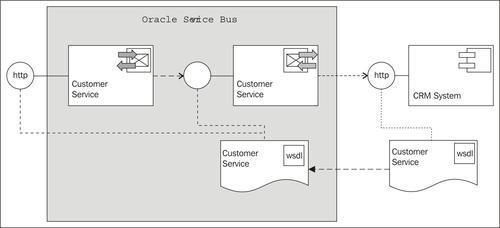
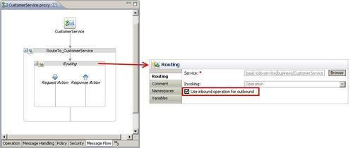

After we have created the business service wrapping the external web service, we can now create the proxy service. The proxy service will allow a consumer to call our service on the OSB. If the OSB needs to support the same web service interface as the backend service does, then the quickest and easiest way is to create a pass-through service:

This recipe continues with the result of the previous recipe. If necessary, the basic-osb-service project at that stage can be imported from here: \chapter-1\getting-ready\business-service-created.
In Eclipse OEPE, perform the following steps:
CustomerService in the File name field and select the proxy folder for the location of the new proxy service. /basic-osb-service/proxy/CustomerService.
Applying this recipe created the simplest possible proxy service. The proxy service offers the same SOAP-based web service interface as the business service/external service, so it's basically just doing a pass-through of the request and response message.
This can be handy if we want to use the OSB for adding an additional abstraction layer to apply service virtualization. If all the service consumers no longer access the external services directly, but only through the OSB proxy-service, a lot of the features of OSB can be used transparently by a service consumer, such as SLA monitoring and alerting, service pooling and throttling, or message validation. This directly supports the main goal of service virtualization—adding operational agility.
By setting the Invoking property to Use inbound operation for outbound, we make sure that the whole WSDL with all its operations is handled by one single Routing action. The inbound operation name on the proxy service is used as the outbound operation name invoked on the business service. Apart from the Routing action there are no other actions in this proxy service. By that, both the request and the response messages in the $body variable are not touched by the OSB. This guarantees that the overhead of adding OSB as a service virtualization layer has minimal impact on the performance.